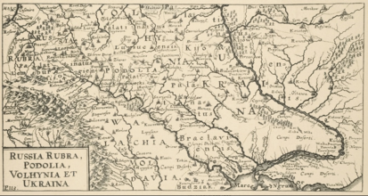
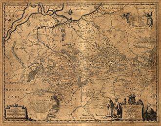
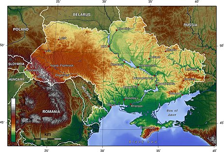
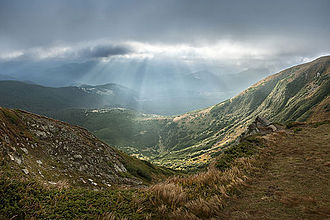
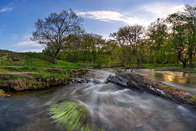

Материал из Википедии — свободной энциклопедии
У этого термина существуют и другие значения, см. Украина (значения).
Украи́на (укр. Україна [ukrɑˈjinɑ]) — государство в Восточной и частично Центральной Европе. Население, по итогам переписи 2001 года, составляло 48 240 902 постоянных жителя[13] и 48 457 102 человека наличного населения[14], по оценкам государственной службы статистики Украины на 1 сентября 2020 года — 41 554 361 постоянных жителя и 41 723 998 человек наличного населения[6][15]. Территория в пределах международно признанных границ[c] — 603 549 км². Занимает 34-е место в мире по численности населения, 44-е по территории. Украина является первым по размеру территории европейским государством, целиком находящимся в Европе.
Столица — Киев. Государственный язык — украинский.
Украина — унитарное государство и парламентско-президентская республика. Должность президента с 20 мая 2019 года занимает Владимир Зеленский, премьер-министра с 4 марта 2020 года — Денис Шмыгаль.
Страна подразделяется на 27 административно-территориальных единиц, 24 из которых являются областями, 1 — автономной республикой (Крым)[c] и 2 представляют собой города государственного подчинения (Киев, Севастополь[c]).
Граничит с Белоруссией на севере, Польшей, Словакией и Венгрией — на западе, Румынией и Молдавией[e] — на юго-западе, Россией — на востоке, северо-востоке и, де-факто, юге. На юге и юго-востоке омывается Чёрным и Азовским морями; имеет морские границы с Румынией в Чёрном море и с Россией — в Чёрном и Азовском.
Часть международно признанной территории Украины контролируется самопровозглашёнными ДНР и ЛНР, часть — Россией (Крымский полуостров[f]).
Бо́льшая часть верующих исповедует православие, также есть приверженцы католицизма и грекокатолицизма, а также иудаизма и ислама.
Объём ВВП за 2019 год, рассчитанный по паритету покупательной способности (ППС) составил $ 560 млрд (13 442 на душу населения). Номинальный ВВП в том же году составил $ 154,69 млрд ($ 3706 на душу населения), занимая по показателю ВВП на душу населения (номинальному и по ППС) предпоследнее место в Европе. Денежная единица — гривна (UAH).
Независимость страны от СССР, союзной республикой которого Украина была с декабря 1922 года, провозглашена 24 августа 1991 года. Продолжательница государственно-национальных традиций и правопреемница УНР[16], государство-продолжатель УССР[17], соправопреемница СССР[18], соучредитель ООН, СНГ, ГУАМ, ОЧЭС и других международных организаций, находится в ассоциации с Европейским союзом. Согласно действующим международным договорам и конвенциям, имеет упрощённый доступ к Черноморским проливам[19], осуществляет научно-исследовательскую деятельность в Антарктиде[20] и миротворческую деятельность в ДР Конго, Косово, Южном Судане, районе Абьей, Афганистане и Приднестровье[21].
Содержание Основная статья: Украина (топоним) По наиболее авторитетной и распространённой версии, в том числе и на самой Украине[22][23][24], название государства происходит от древнерусского слова оукраина — «пограничная область» — которое изначально применялось к разным пограничным землям Руси[25][26][27] и древнерусских княжеств.  Как сообщается в словаре Брокгауза и Ефрона, после того, как в конце XVI века Юго-Западная Русь в составе Великого княжества Литовского вошла в Речь Посполитую, часть её территории, простирающаяся от Подолья на западе до устья Днепра («очаковского поля») на юге и включающая в себя большую часть земель будущей Екатеринославской губернии на востоке, стала в этом государстве неофициально именоваться «Украиной»[28]. Связано это было с приграничным расположением этих территорий в польском государстве. Таким образом, в XVI—XVIII веках «Украина» становится названием конкретного географического региона среди названий других историко-этнографических регионов (Волынь, Подолия, Покутье, Северщина, Червоная Русь, Запорожье). Оно закрепляется за Средним Приднепровьем (Южной Киевщиной и Брацлавщиной) — территорией, контролируемой казаками[29]. Жителей этой территории стали называть украинцами или украинниками[30]. Географическую, а не этническую привязку этого понятия демонстрирует тот факт, что украинцами называли и служилую польскую шляхту на этих территориях[31]. Число украинцев постепенно росло, и название «Украина» распространилось на регионы за пределами первоначальной территории. Во времена восстания Хмельницкого оно стало применяться по отношению ко всей территории, где проходили военные действия.

С XVIII века понятие «Украина» используется в географическом смысле и является общеизвестным наравне с названием «Малороссия»[33]:183-184 По мере роста национального самосознания, значимость понятия «Украина» повысилась, и само слово стало восприниматься не только как географический термин, но отчасти и как название этнического пространства. Особенно заметно это стало к концу XIX века[33]:186. На рубеже XIX и XX веков термин «Украина» как название всей этнической территории стал полностью самостоятельным и самодостаточным, вытеснив другие самоназвания, которые с тех пор употреблялись только на региональном уровне[33]:186. В ходе борьбы украинского национального движения с малороссийской идентичностью оно стало конкурировать и с официальным и церковным термином «Малороссия», вытеснив его окончательно в 1920-х годах в связи с большевистской политикой коренизации и украинизации[34][35].
Некоторые украинские историки и лингвисты выдвигают версию, что название «Украина» происходит от слова «край», «краина», то есть просто «страна», «земля, заселённая своим народом»[36][37][38][39]. Эта версия, в частности, приводится в школьных учебниках по истории Украины[40][41]. При этом утверждается, что термины «україна» и «окраїна» всегда чётко различались по смыслу[36].
Сочетаемость предлогов «в/на», «из/с» с топонимом «Украина» в современном русском языке иногда рассматривается как спорный вопрос. По мнению российского лингвиста, председателя Орфографической комиссии РАН (2000—2014) В. В. Лопатина, исторически нормативной является конструкция «на Украине» (но: «в государстве Украина»)[42]. Та же норма сохранялась в прижизненных изданиях «Справочника по правописанию и литературной правке» Д. Э. Розенталя[43], однако в переизданиях справочника, выпускаемых с начала 2000-х годов под редакцией многолетнего соавтора Розенталя, известного российского языковеда И. Б. Голуб, предписывается употребление исключительно формы «в Украине»[44]. В стилистическом словаре вариантов «Грамматическая правильность русской речи» (2001)[45], официальном письме-разъяснении Института русского языка РАН (2009)[46], работах авторитетных российских лингвистов и переводчиков В. Г. Костомарова[47], Дмитрия Ермоловича и Павла Палажченко[48] конструкции «в Украине» и «на Украине» признаются равноправными.
В поздний советский период преобладало употребление «на Украине», но в русском языке XVIII — начала XX века (до 1930—1940-х годов)[49] наряду с ним употреблялось также «в Украине» — не только у авторов украинского происхождения (Нарежный, Гоголь, Костомаров, Короленко, Вернадский), но и у уроженцев «великорусских» губерний: «в Украину» (Татищев, Карамзин, Одоевский, Герцен, Пришвин)[50], аналогично с вариантом Украйна, например, в поэме А. С. Пушкина «Полтава» (В Украйну едет в царский стан)[51]; «из Украины» (Лесков, Горький, А. Толстой; последний вариант оставался активным весь XX век)[52]. Многие авторы этого периода употребляли параллельно как «на Украине», так и «в Украине».
Основные статьи:География Украины, Крайние точки Украины и Физико-географическое районирование Украины
См. также: Время на Украине
Украина расположена в юго-восточной части Европы[56], в пределах Восточно-Европейской равнины. Территория республики в её международно признанных границах[c] составляет 603 549 км², что соответствует 5,7 % территории Европы и 0,44 % территории мира (44-е место по площади среди стран мира и 1-е среди стран, целиком находящихся в Европе[g]).
Контроль Украины над Крымским полуостровом и частями Донецкой и Луганской областей был утрачен в 2014 году. Почти вся территория Крыма, за исключением севера Арабатской Стрелки, являющегося с 1954 года территорией Херсонской области, контролируется Россией (см. присоединение Крыма к Российской Федерации), а отдельные районы Донецкой и Луганской областей контролируются самопровозглашёнными Донецкой Народной Республикой и Луганской Народной Республикой, соответственно.
Территория Украины в её международно признанных границах[c] имеет размеры 1316 км с запада на восток и 893 км с севера на юг; лежит приблизительно между 52°20’ и 45°20’ северной широты и 22°5' и 41°15' восточной долготы. Крайний северный пункт — село Гремяч, Новгород-Северский район Черниговской области, южный — мыс Сарыч (Автономная Республика Крым) (по другим оценкам — мыс Николая, на 3,1 км восточнее мыса Сарыч)[c], западный — село Соломоново близ города Чоп Закарпатской области, восточный — село Ранняя Зоря[57][58] Луганской области.

Основная статья: Государственная граница Украины
Украина имеет официальную границу с 7 государствами — членами ООН: на востоке, северо-востоке и де-факто на юге с Россией, на севере с Белоруссией, на западе с Польшей, Словакией, Венгрией, на юго-западе с Молдавией (часть контролируется непризнанной Приднестровской Молдавской Республикой) и Румынией. Протяжённость береговой линии — 2835 км. Общая протяжённость международно признанных границ составляет 6992 км, длина морской границы составляет 1355 км (по Чёрному морю — 1056,5 км; по Азовскому морю — 249,5 км[59]), длина сухопутной границы — 5637 км[60].

Основная статья: Рельеф Украины
Рельеф большей части территории имеет равнинный характер: низменности занимают 70 %, а возвышенности и горы — 25 % и 5 % соответственно[61]. Горы находятся на западе (украинские Карпаты, высшая точка — гора Говерла, 2061 м над уровнем моря) и юге (Крымские горы, высшая точка — гора Роман-Кош, 1545 м над уровнем моря).
Основные низменности: на юге — Причерноморская низменность, на севере — Полесская, в центре — Приднепровская, на западе — Закарпатская[62].
На юге Украины, на территории Херсонской области находится один из самых больших песчаных массивов на территории Европы — Алешковские пески.

Основная статья: Климат Украины
На всей территории Украины климат — умеренно континентальный[62], степень континентальности растёт в направлении от запада к востоку и возрастает с увеличением годовой амплитуды температуры воздуха, наибольшей континентальностью характеризуются восточные регионы Украины[63]. Для Карпат характерен горный тип климата[64], для территории Крыма — субтропический климат средиземноморского типа[62].
Лето на всей территории Украины продолжительное, тёплое или жаркое, средняя температура июля составляет +18-24° С. Зима сильно зависит от региона, средняя температура колеблется от −8° С до +2-4° С. Мягкая зима наблюдается на юге и западе республики; наиболее холодные зимы наблюдаются на северо-востоке. Среднегодовое количество осадков составляет 600 мм, при этом значительно различаясь в зависимости от региона — в Карпатах выпадает до 1600 мм осадков в год, на юге и юго-востоке 400—300 мм[62].
Основные статьи: Флора Украины и Фауна Украины
Природа Украины отличается значительным разнообразием: при том, что Украина занимает менее 6 % площади Европы, в стране представлено примерно 35 % общеевропейского биоразнообразия благодаря наличию нескольких природных зон и прохождению по её территории миграционных путей многих видов животных[65]. Почвенно-растительная зональность хорошо выражена, характерно сочетание трёх природных зон: лесной, лесостепной и степной[62].
Флора Украины насчитывает более 27 тыс. видов растений, а фауна насчитывается более 45 тыс. видов животных[65].
См. также: Авария на Чернобыльской АЭС
С учётом географического положения Украины и разной степени освоенности человеком её регионов, экологическая ситуация в стране является неоднородной, однако в целом имеет тенденцию к ухудшению — прежде всего в связи с практически повсеместным расширением хозяйственной деятельности. Основными проблемами в этой области являются растущий объём атмосферных выбросов парниковых газов, массовое сведение лесов, загрязнение воздуха и воды отходами промышленного производства, растущее потребление пресной воды. Огромный ущерб окружающей среде наносят лесные пожары, периодически охватывающие значительные площади: их следствием становится не только исчезновение значительных массивов растительности вместе с обитающими в ними животными, но и задымление населённых пунктов.
На территории Украины имеются районы с неблагоприятной экологической обстановкой — Донецкий угольный и Криворожский железорудный бассейны, район Чернобыля.
Основная статья: Природно-заповедный фонд Украины
С конца XX века власти реализуют ряд программ по ограничению вредного воздействия промышленной и сельскохозяйственной деятельности на окружающую среду, однако они, как правило, дают ограниченный эффект. Благодаря охранным мерам, часто предпринимаемым в сотрудничестве с МСОП и другими профильными международными структурами, удалось остановить сокращение популяций некоторых видов животных и растений, а в отдельных случаях — добиться увеличения их численности.
Охраняемые территории занимают 14,63 % суши и 2,98 % морской территории.